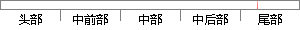

从可行性分析与需求分析到开发技术介绍，再到系统模块的概要设计与详细设计，接着到系统的数据库实现与页面上的具体实现，最后到系统的测试与系统的维护的整个软件开发的过程。
片段位置图

相似结果|
相似片段 1：的非常详细，其他模块的设计过程也相类似，没有再做详细介绍。接着介绍了数据库和水晶报表的具体创建过程，最后介绍了系统测试的方法和步骤。62本系统的设计实现基本上满足了用户需求，性能需求，比较容易维护
|
※ 片段修改建议 ※
近似词参考：- 分析：阐发 阐明 剖析
- 分析：阐发 阐明 剖析
- 开发：开辟
- 技术：手艺 技能
- 介绍：先容
- 系统：体系
- 概要：提要
- 设计：计划
- 详细：具体 细致
- 设计：计划
- 系统：体系
- 具体：详细
- 最后：末了
- 系统：体系
- 系统：体系
- 维护：保护
- 整个：全部
- 过程：进程 历程
系统自动生成语句：从可行性阐发与需求阐发到开辟手艺先容，再到体系模块的提要计划与详细计划，接着到体系的数据库实现与页面上的详细实现，末了到体系的测试与体系的保护的全部软件开辟的进程。
注：本片段修改建议为系统自动生成，仅供参考。